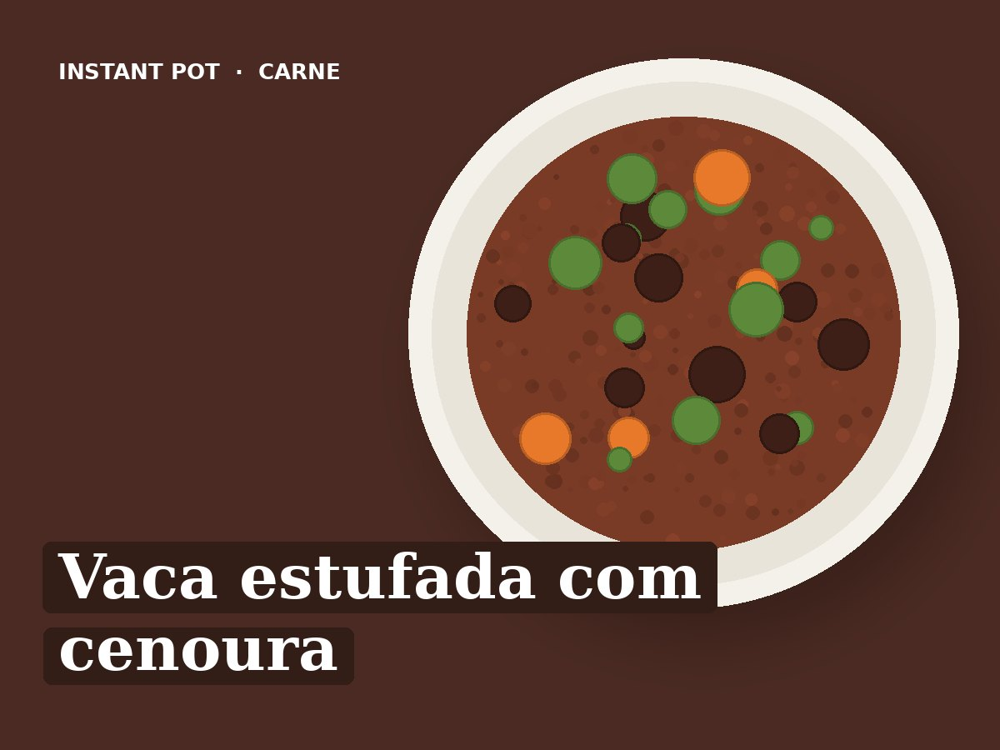

Vaca estufada com cenoura
Ingredientes
- 800 g de acém de vaca em cubos
- 1 cebola
- 2 dentes de alho
- 4 cenouras (cerca de 300 g)
- 1 folha de louro
- 1 colher de chá de colorau
- 250 ml de água
- 1 colher de sopa de azeite
- Sal q.b.
Preparação
- Saltear (Sauté): Aquecer o azeite e alourar a carne em 2 vezes. Retirar.
- Saltear (Sauté): Juntar a cebola e o alho picados, 2 minutos. Deitar a água e raspar bem o fundo.
- Voltar a pôr a carne. Juntar a cenoura em rodelas grossas, o louro, o colorau e o sal.
- Pressão (Pressure Cook): Pressão alta, 35 minutos.
- Libertação natural 10 minutos, depois abrir a válvula.